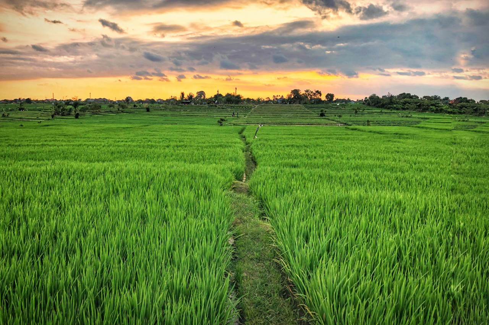

Objek Wisata Subak Sembung , Keindahan Sawah dan Budidaya Jalak Bali
Nikmati Keindahan Alam Ini
Subak Sembung
Subak sembung adalah ekowisata yang berada di kota Denpasar. bertepat di desa Peguyangan. Sebagai tempat favorit untuk berolahraga
Bayu Adi
28 Januari 2022
5 comments
Jalak Bali
Di Subak Sembung terdapat penangkaran Jalak Bali yang di budidayakan oleh warga desa.
Bayu Adi
28 Januari 2022
6 comments
Warung Mina
Di dekat ekowisata subak sembung ini juga terdapat rumah makan yang bernama warung mina. disini menyediakan makanan laut dan yang lainnya
Bayu Adi
28 Januari 2022
4 comments